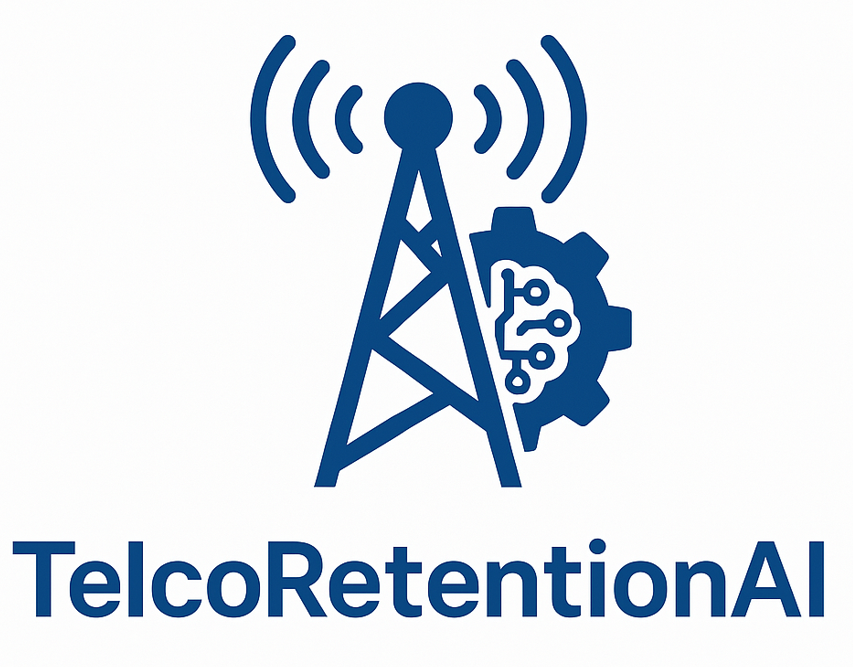

TelcoRetentionAI
📞 TelcoRetentionAI is a Machine Learning project designed to predict customer churn in a telecommunications company. It leverages predictive modeling, class balancing and hyperparameter optimization to support targeted customer retention strategies.
- Project Name:
telco_retention_ai - Author:
tralencar - Version:
0.1.0 - License:
MIT - Keywords:
telco,churn,retention,customer-lifetime-value,AI - Data Source: Kaggle - Telco Customer Churn Dataset
🔹 Visual Identity of the TelcoRetentionAI logo
The TelcoRetentionAI logo is not just an aesthetic icon. It is a strategic communication piece that visually synthesizes the pillars of the project: sector (Telco), purpose (Retention), and differentiation (AI). As a brand, it conveys trust, innovation, and business-driven outcomes, reinforcing the solution’s position as an intelligent and scalable platform for churn reduction in the telecommunications industry.

1. Clarity and Immediate Association with the Telco Sector
The stylized "T" in blue is a direct and recognizable symbol of the telecommunications sector. Using this letter as the central shape reinforces the association with telco companies without needing further explanation.
- Blue color: Reinforces values such as trust, stability, technology, and innovation — key attributes for the telco audience.
2. Circular Elements: Metaphor for Retention and Lifecycle
The circular or looping shapes surrounding or interacting with the “T” suggest ideas of customer retention, loyalty, and the Customer Lifecycle.
- These elements create a subconscious visual narrative: the customer remains within the company’s value cycle.
- They also suggest continuous movement, indicating ongoing analysis and proactivity — key pillars of predictive AI systems.
3. AI Elements: Modernity and Sophistication
Subtle lines, circuit patterns, or geometric dots symbolize machine learning, algorithms, and neural networks.
- Visually communicates that the solution is tech-based and powered by AI, adding sophistication and differentiation from traditional BI or CRM tools.
4. Integrated Branding Strategy
The visual identity of TelcoRetentionAI is designed to translate the project’s business goals into graphic elements:
- Cutting-edge technology (AI)
- Customer focus and long-term value (retention & CLTV)
- Practical application in telecommunications (Telco)
This direct connection between visual brand and value proposition improves communication with stakeholders, investors, and users, while enhancing brand recall.
🔹 Features
✅ Programming Language: Python
✅ Hyperparameter optimization with Optuna
✅ Class balancing with SMOTE (imblearn)
✅ Evaluation using scikit-learn metrics
✅ Support for Gradient Boosting, Random Forest, and Logistic Regression models
✅ Code quality ensured by Pre-commit, Ruff, Black, Flake8, Isort, Interrogate
✅ Task automation with Makefile
✅ Semantic versioning using bump2version
✅ Automated testing with Pytest + Pytest-Cov
✅ Notebook linting and quality enforcement using nbQA
✅ Auto-generated documentation with MkDocs, MkDocs Material, and mkdocstrings-python
✅ Automatic formatting and linting with Ruff, Black, and Isort
✅ Enhanced documentation design with mkdocs-bootstrap386 and pymdown-extensions
✅ Git hooks for code validation using Pre-commit
✅ Modular and reusable structure managed with Poetry
✅ Continuous Integration (CI) with GitHub Actions, including:
🔹 Code quality checks on every push or pull request to main
🔹 Automated setup of the Python environment with Poetry
🔹 Automatic installation of development dependencies
🔹 Execution of the make quality rule to enforce coding standards
🧪 Development Tools
ruff— Linting and formatting (line length = 88, flake8-bugbear, isort, pyflakes, pycodestyle)black— Code formatterisort— Import orderingflake8— Lintinginterrogate— Docstring coverage checkerpytest,pytest-cov— Unit testing and coveragepre-commit— Git hooks for automated code checksbump2version— Semantic version control
🔹 Documentation Structure (CRISP-DM aligned)
-
01 - Business Understanding: Defines the business goals, context and success criteria for churn reduction in a telco company.
-
02 - Data Understanding: Explores and visualizes the dataset to understand key variables, distributions, and correlations with churn.
-
03 - Data Preparation: Covers data cleaning, feature engineering, encoding, scaling, and handling class imbalance using SMOTE.
-
04 - Modeling: Describes the implementation of classification models (Logistic Regression, Random Forest, Gradient Boosting), including training and hyperparameter settings.
-
05 - Evaluation: Evaluates model performance using metrics such as ROC AUC, precision, recall, and interprets results.
-
06 - Project Objectives Result: Shows how the objectives of detecting churn drivers, estimating churn risk, and prioritizing customers were met.
-
07 - Project Goals Result: Maps the execution results to strategic and tactical business goals for stakeholder alignment.
-
08 - Business Recommendations: Provides actionable insights and next steps to reduce churn based on data-driven results.
-
09 - Project Conclusion: Summarizes the impact, outcomes, and limitations of the TelcoRetentionAI solution.
-
Installation: Steps for installing project tools.
-
Usage Guide: Instructions on how to run the project.
-
Project Structure: Describes the organization of files, directories, and logical structure used in the repository.
-
Contributing Guidelines: Guidelines for open-source contributions and collaboration rules.
CRISP-DM Methodology in TelcoRetentionAI
The TelcoRetentionAI project adopted the CRISP-DM (Cross-Industry Standard Process for Data Mining) methodology to structure the end-to-end development of a churn prediction solution. Below is a description of each phase as applied to this project.
📘 1. Business Understanding
The project began with a deep understanding of the telco business problem: high customer churn. The strategic goal was to reduce churn rates through predictive analytics and targeted retention actions.
- Primary objective: Predict which customers are likely to cancel their subscription.
- Secondary objective: Generate actionable business insights for CRM and marketing campaigns.
📊 2. Data Understanding
The dataset was explored to understand its structure and identify patterns:
- EDA techniques like histograms, KDE plots, and boxplots were applied.
- High churn was observed among:
- Customers with month-to-month contracts.
- Users without tech support or online services.
- Senior citizens and users without a partner.
- Correlations, distributions, and outlier analyses guided feature engineering and business insights.
🛠 3. Data Preparation
In this phase, the dataset was cleaned and transformed:
- Null values removed and
TotalChargescast to numeric. - Categorical features were encoded using
LabelEncoder. - The target variable (
Churn) was mapped to binary. - SMOTE was applied to balance the target classes.
- Train-test split ensured a stratified sampling approach.
🤖 4. Modeling
Three classifiers were trained and compared:
- Logistic Regression
- Random Forest
- Gradient Boosting (Best Performer)
All models were evaluated with:
ROC AUC,F1-Score,Precision,Recall- Confusion matrices, lift curves, calibration curves, and PR curves.
✅ 5. Evaluation
The models were assessed both quantitatively and visually:
- Gradient Boosting outperformed others in AUC, recall, and calibration.
- Lift and gain curves confirmed model stability.
- SHAP values were used to interpret predictions.
- Feature importance indicated contract type, tenure, and monthly charges as top predictors.
📈 6. Deployment / Actionable Insights
While not deployed in production, business-oriented deliverables were created:
- Dashboards and charts for decision-makers.
- Scoring system to prioritize retention based on churn risk × CLTV.
- Segmented strategies targeting:
- Short-tenure customers
- Users with no add-on services
- Tech-savvy users using paperless billing
🎯 Summary
CRISP-DM provided a clear, iterative roadmap to:
- Understand the telco churn problem
- Prepare, model, and evaluate data scientifically
- Deliver business-driven recommendations
TelcoRetentionAI stands as a modular, interpretable, and reproducible churn prediction pipeline.